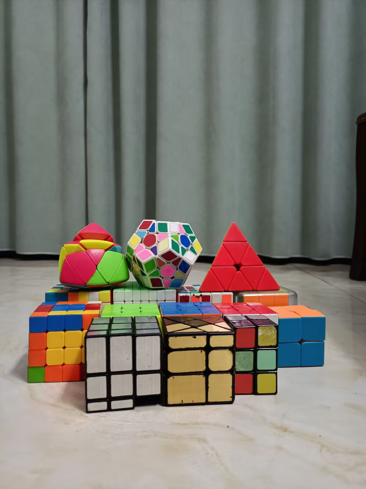
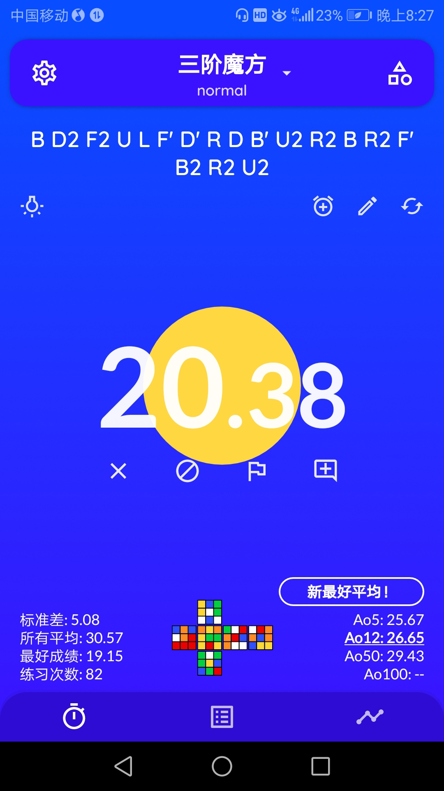

魔方
魔方


三阶PB（Personal Best）
(原来那个12s图已经找不到了...姑且拿一个图吧)
我也已经很久没认真玩这个玩具了，很久很久没有认真地练过七步十字了。初中的时候完全没背过CFOP，靠运气进过一次25s。然后直到高三了，我才重新拿起来。我不得不承认我拿起得并不很是时候，某种程度上来说也许干扰了我的复习。但是在那段枯燥乏味的时光里，难得地有一个分散情绪的地方，也不算太差吧。
当然，我还是没有背完CFOP，沟槽的Orientation相似的太多了，我现在估计又忘记了一些。我的七步十字发挥还是很不稳定，Permutation还是有几个手序卡卡的，First 2 Layer的慢速观察估计也退步了很多。可能我这么喜欢这个玩具的原因，是因为它给了我一些别处所没有的成就感，它和音游一样非常吃天赋，但是对普通人来说，在信息差对等的情况下，越努力就越出色。在旁人眼中，它是一个很神秘的存在，让人完全摸不着头脑。在那些人面前，这当然是一个很好的装逼神器，可是真正玩过的人就知道，并没有人懂你，他们只会惊叹，不会知道你勤奋练习的流畅指法是多么的优雅，也不知道你的观察和记忆精细入微，更不会理解那日夜联系中沁入魔方表面的肌肉记忆。
某种程度上来说，魔方有点像我。我明白自己天赋的平庸，但在他人眼里，我无比出色，他们不理解我为什么会对现状不满，就像他们不理解为什么我能12s复原一个魔方了还觉得自己菜。 我当然是菜的，我常和别人这样说，生怕他们因为我外表的光鲜而对我产生不必要的期待。